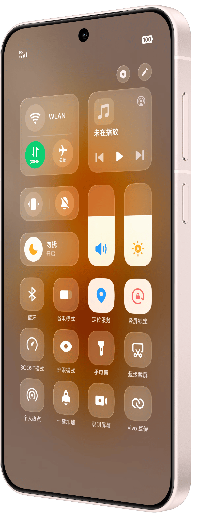
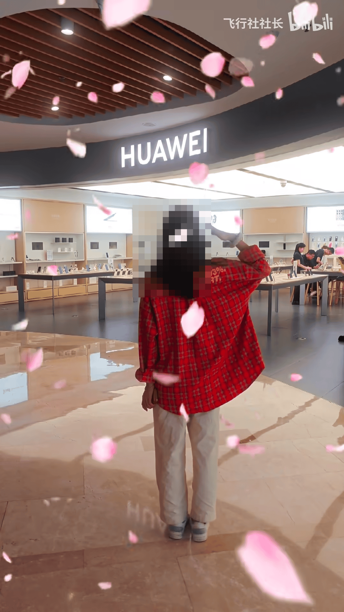
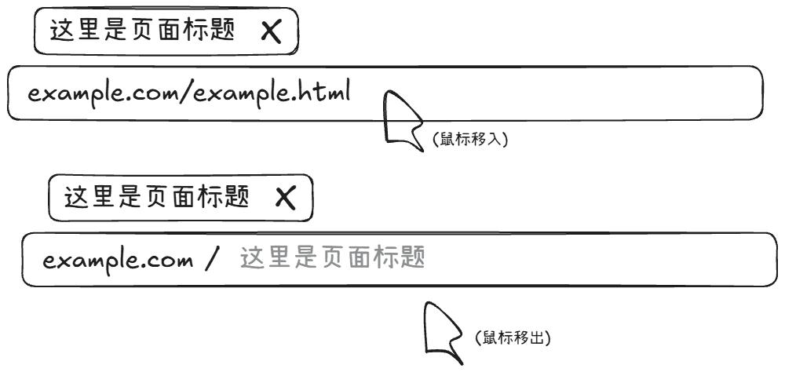
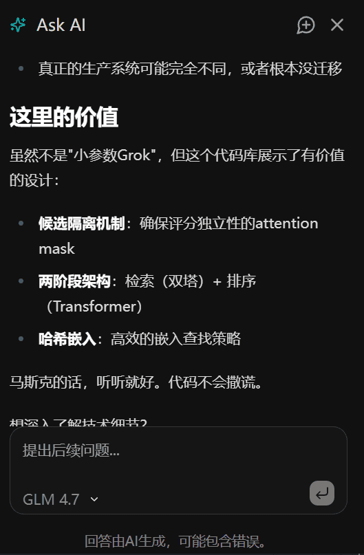
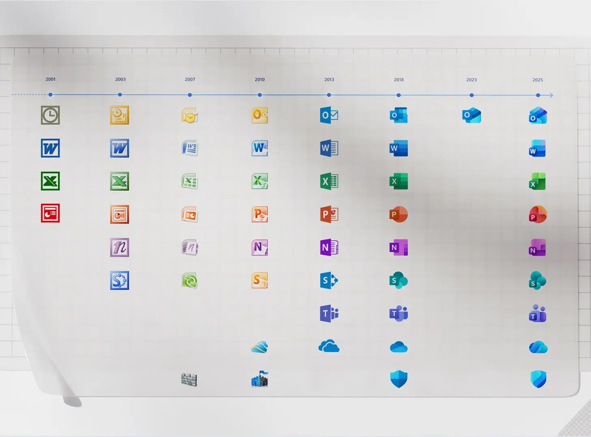

前言
免责声明：这篇文章写的是我的个人主观观点、主观体验和一些客观事实，以批评为主，不存在与任何公司的利益输送关系，目的是希望大家进步，为用户带来更好地体验
部分数据的收集使用了AI，主要使用MiniMax、ChatGLM
像是百度搜索、流氓软件这些已经烂大街了的我这里不再去提，还有一些东西经过考虑后我也不打算写了
更多内容可以再最底下评论区聊
文章稍微有点长，可利用右上角的目录跳转功能
杂谈
苹果：从引领者到追赶者
从前
乔布斯时代，乔布斯带领苹果定义了新的产品类别：Macintosh、iPod、iPhone、iPad……
引入了引入革命性的交互技术：鼠标与GUI、多点触控……
颠覆了旧时代，将世界推向了新时代
那个时候，苹果是创新的代名词
2011年10月5日，老爷子去世，库克接任
现在
乔布斯是一位创新者，而库克是一位运营家
即使Apple Watch、AirPods掀起了波澜，却远远不及改变世界，Vision Pro对现在的人们来说依旧遥不可及，他没能像乔布斯那样改变每个人的生活
而在市场上，相比于竞品，却显得乏力
当安卓厂商的高刷慢慢普及时，苹果依旧停留在60Hz，当苹果终于研究出高刷后，还用了一个ProMotion去称呼，似乎很高级的样子，不过毕竟苹果就是要打造成高级的代名词
而这样的例子不知一点点……
未来（AI）
WWDC2024，苹果正式推出AI——Apple Intelligence（好一个AI啊……）
在发布会上，信誓旦旦地演示各种看似有用的功能，几乎没什么亮点，还不断延期
可是据说啊，隔壁的AI团队一边看WWDC一边懵逼——我怎么不知道还有这些功能
而苹果并没有自己的模型（好像有，但是不足以落地）（有消息说是死磕端侧小模型效果一直不好），就去和OpenAI合作（后来又与谷歌合作，没想到吧，这对死对头合作了）
而国内就没这么好了，众所周知，国内大模型得备案，国外的基本上都不合规，进不了中国，一开始是百度（三星的也是，而百度的模型嘛，paddle不错，但是LLM是真的烂，毕竟还被高层耽误了（“大模型要卷应用”论和“大模型闭源没未来”论），到现在都不能上桌），可是苹果死守隐私问题，始终达成不了，辗转多个供应商，最后找了阿里，现在怎么样我就不知道了，总之还没有正式上线，这可是2026年了（还有我之前看到过一个消息成苹果和阿里达成合作之后百度反悔了，在隐私问题上让步了）
总之苹果在AI方面是真的令人担心，完全追不上别人的步伐，状况频发
Liquid Glass
WWDC25，苹果Liquid Glass，给我看蒙了，这啥玩意？
苹果换设计的原因很明显，是为了统一设计语言，Vision Pro用了这种设计，那么全都得用这个
可是它适合Vision Pro就一定适合其它设备吗？不！
Vision Pro是MR设备，背景是现实世界，通透自然，可是手机电脑没有背景啊，那么这种材质的背景就是其它UI组件了，那么后果就是：
- 可读性下降：这是最明显的，这种超高透明度组件背景，基本上就是透明了，那你想想，白色字搭在白色背景上（甚至背景上有文字），你只能隐隐约约看到字，还有一堆奇奇怪怪的光影效果，视觉上难以定位和辨认，造成视觉污染，对比度明显下降，难以阅读，也不利于区分视觉层级
- 视觉污染、视觉噪音：而这一堆没有任何实际作用的光影效果设计装饰为人眼带来了额外的视觉负担（AI更是，发个截图给AI可能更难辨认了），纯纯视觉污染，还带来了各种花里胡哨的相对多余的动画效果，真的没有那个必要
- 性能：虽然可以做到系统级别的优化，但是这也带来了远高于原本模糊效果的额外性能开销，依旧是牺牲用户体验，真不知道他们怎么想的
我看，这就是苹果的一场作秀，视觉效果优先而大幅牺牲可用性，这种设计可以作为一种艺术，但是绝对不能用于UI
此外，进入测试版系统之后，它还改来改去，各种设计微调（动画、透明度等等），甚至还出现了圆角和设备屏幕不匹配（圆角匹配设备在以前可是被大家称颂的啊），可见这个的发布和AI一样，也是很仓促的，根本就没有准备好
（令我更绝望的是，这是苹果干的，无论好不好都会被安卓厂商抄过去，大家都不像样了）
The problem is, Microsoft has no taste ——乔布斯
不过现在看来，对比一下Fluent UI，虽然微软那边也有一些问题吧，但是起码没这么大，我都可以说，现如今没有品位的是苹果了，这种设计着实令我失望
OriginOS：变了味的橙子
作为一位OriginOS用户（IQOO Neo9），从OriginOS4用到收到6的推送，可是我现在在OriginOS5（PD2338_A_15.1.14.7.W10.V000L1），迟迟不肯更新6，还把各种自动更新的开关给关掉了，这是我什么呢，我觉得我很有必要说一说
从Funtouch到OriginOS
我依稀记得，几年前小白测评曾横评过各大手机系统（找了一下，好像是BV1DE411t7tw，但是和记忆中不一样，好像不是这个），对Funtouch的评价是：混乱——各种界面的设计风格不统一，尤其是不同的系统应用之间的对比（我记得我当初看的那个视频还打开了不同的系统应用的），基本上全是在抄苹果，但是还有自己的想法
OriginOS的发布改变了这一切，轻拟物设计、扁平风、报纸式下划线……耳目一新，令人眼前一亮，还有各种小创新，像是原子组件、原子随身听，打破了固有的认知，又很好用
它很独特，也很好看，是经过了认真设计得来的结果
可是近几年，它变味了，不再是最初那个开天辟地的OriginOS了
开倒车的OriginOS5
我从4升级到5，第一个改变就是AI合并了，它终于合并了，并且提供了一个小横条唤醒AI，默认关闭（不知道预装5的手机是不是默认开启），开启要求开启“抬高指示条”（设置→系统管理与升级→系统导航→抬高指示条）
开启之前，小横条是在底部很细的贴紧屏幕下边缘的，没什么存在感，节省了颜色、沉浸的处理，也无需让应用开发者处理底部抬高的问题，可就是为了这个AI功能，它得抬高，有点可惜
不过我对5最反感的一点其实是原子岛
OriginOS1推出了原子通知，首创这种形式，到了苹果借鉴了一下（改的更有“状态”意义），做成灵动岛，各种手机厂商纷纷借鉴；有的走了苹果路线——和屏幕挖孔融合，有的走了vivo路线——以胶囊的方式显示在上面
可最让我想不清的事情发生了，vivo转向了苹果的方案
原本的原子通知显示（应用市场安装）进度是一个可以适应深色模式的进度条，有数字显示，现在只是漆黑的一片，留个百分比数字，一言难尽，更新之后唯一的好处可能就是适合把音乐和录屏放上去了（原本的实在不适合放音乐控件）
而在原子岛里面，最最让我反感的，是充电图标动画！我好想给你找个4的素材看看，但是我没找到，只能用文字描述一下了：状态栏各种其它内容淡去的同时电池图标略微放大、电池百分比淡去、电池图标颜色变为绿色，然后一个插头轻轻地从左边插进去，再恢复原状，我觉得这个设计得挺好的，到了5嘛……我不想说，直接给你看图：（自己截的）
还没终末地的好看（
整个状态栏淡去，原子岛向两边散开，那个动画没有了，这个图标就像一张静态图片一样放在那里，没有一点动效
令我失望的OriginOS6
我想，照着更新介绍说说
- 新设计：大逆不道！学了苹果Liquid ass还学华为光源效果，丑！
- 控制中心设计升级：其中这个控制中心，怎么看都怪怪的（图源官网），尤其是这个边距，震动和静音相对于面板的边距明显很小很不和谐，WLAN等图标合并在一起摆在那也怪怪的，尤其是还加上了圆形圈住图标

- 锁屏更新：锁屏增加自定义自由度，一看还是学苹果的，没b用，我拿起手机就解锁了（抬起亮屏+面部解锁 或直接指纹），直接跳过锁屏，再说了，还不如改进一下华容道锁屏，以前OriginOS的特色之一，就是自由度太低了，左下角的完全不能编辑（充电就显示充电，不充电就是步数），右边应用的编辑体验太差了（只能2或3个应用，想要换掉两个要先删除一个再添加一个，不能暂时放置1个或4个）
- 性能优化：保留节目，没什么感受，再说了者几年的手机也该推送负优化了
- AI唤醒新设计：借助软件更新，体验到了新的AI界面
- 相比以前，主界面有模有样的了，可以说是大改
- 原本的唤醒动画：底部小横条放大变成输入框同时一个小小的蓝色涟漪根据手指位置（非手指触发则在屏幕底部中间位置）扩散到屏幕大概一般的位置消失，发送请求后直接再底部输入框扩展开来，形成聊天界面，从下往上扩展面板
- 后来的：彩色明显涟漪，输入框有彩色边框，屏幕底部还有彩色光效，对话和语音输入的文字显示在上方，依旧抄苹果
- 还有一个以前就遗留下来的一个问题：小窗，AI的小窗并不和其它应用用的一个小窗逻辑，而是额外写的，可以做到改变窗口比例，可是这个改变就只能改变高度不能改变宽度是几个意思，别人都是等比缩放你还是原比例，横屏的时候去掉高度限制、顶部应用栏、底部输入框、底部输入框上面的一排按钮（旧的是放在输入框下面），我这边聊天部分只能看到最多三行字，足足三行！我看个xxx
当时我看了这个更新的发布，心中只有失望，就这点功能更新？值得一个大版本吗，之前几个小版本号更新都能顶这一个大版本了
感觉OriginOS正在走下坡路
华为的营销：几块钱招来的？
感觉华为在营销方面存在着一点点问题，这里简单用几个事例说说
“人人买得起”
（这个主要不是华为的问题）
今年三月份，我们会推出一款别人想不到的产品，我相信哪个产品上市后，全国人民抢购。因为三折叠是大家能想得到但做不出去来的。我今年希望做一个全国人民抢购都能买得起的，全国人民抢购的产品！
这就是“人人买得起”的出处了，“人人买得起”，那一定很便宜吧
——7499起
我是人吗？
那么7499如何让人人都买得起呢？分期，一年付完（一个月600多块）
无语
爱国宣传
华为一直在强调华为的爱国企业身份，尤其是在中美贸易摩擦和技术竞争的大背景下，煽动起"爱国情怀"和"中国制造"的民族自豪感，突出其技术自主和国产化率等要素，强调麒麟芯片、鸿蒙系统等核心技术自主可控的背景，并通过广告、公关、新媒体等多种渠道进行广泛宣传……
从此，华为和爱国就挂上了钩，网上便有了：
- 不买华为不爱国，买苹果是叛国贼
- 向华为店敬礼、磕头、下跪（图源网络，该图只是冰山一角）

- 给你找了个视频，想看自己看
- ……
可是……华为配吗？华为是一家民营企业，不是国有企业，像国家电网那样子的搜人崇拜倒还好，华为只是一家赚钱的大公司而已，只是因为生在中国就和爱国搭上边了？难绷
鸿蒙
HarmonyOS刚推出前后，华为宣传其为系统备胎，可实际上鸿蒙一开始其实就是给物联网设备用的，因此1.0也只是搭载到了电视上，到2.0开始才应用到手机上，称之为华为自研，可2.0怎么个自研法？自有应用约等于小程序，生态贫瘠，体验差，除此之外基本上全是安卓的东西了，这是哪门子自研？
这就使互联网产生了两派：安卓套壳派和完全自研派，很明显后者是完全错误的，而我对于2.0~4.2的鸿蒙站在前者
到了5.0，即NEXT版本，一定程度上基本上可以说是自研了，应用生态基本上推翻重来了，原生app的api基本上大变化了（IT之家在2.0时期开发上架原生app，5.0推出之后有重写了），可以推测出来2.0的时候整个app生态相关的内容都没准备好
此外，根据v6.0 Release 内核概述 文档，我不是很看得懂，按我的理解，看架构图，内核层分为内核子系统和驱动子系统，而内核子系统使用的是LiteOS或Linux的内核，这是不是意味着它都没有自研自己的内核？（问了一下AI，AI表示这表述不完全准确，仅供参考），而我们看看这个LiteOS，是个非常轻量的RTOS，代码托管在Gitee上，最新一次提交已经4年前了，最新的pr是一年前了，有点废了
它为了生态，选择了开源，这是对的，可是这个开源有成效吗？首先OpenHarmony和HarmonyOS NEXT的UI上天差地别，既没有什么流畅的动画曲线，也没有标志性的什么东西，就是个毛胚房，跟谷歌学呢？不能顺便附带一点点HarmonyOS NEXT的东西进去吗？还有这个生态令人堪忧啊，我看到二开OpenHarmony的和共享代码基本上全是热爱它的个人或小公司，没什么大公司
有人说想要看到某某品牌手机搭载鸿蒙，其实我觉得这不可能，除非那家公司刚起步且要打爱国牌，要是使用OpenHarmony，一方面应用生态就不行，劝退一大堆消费者，另一方面是战略问题，如果是已经有了自己的安卓UI的厂商，那是绝对不会轻易放弃成熟的安卓和自己打造的系统品牌的
一加：不再是以前的一加了
2021年，OPPO和一加合并，从此，一加离一加越来越远了
软件上，大氢亡了！！！，国内乃至全球少有的又一个比较类原生简约系统倒下了，取而代之的就是一个被改得面目全非的国产UI，那份纯净不复存在，实在可惜
不将就——那为什么还是将就着用着ColorOS呢，重蹈谷歌“不作恶”的覆辙吗？
氢OS没了，国外氧OS还在呢，还是类原生，结果呢，一加似乎不想额外再维护一个系统，过了几个版本，现在已经是ColorOS改名版了（AI、应用商店之类的东西为了迎合海外市场而改成谷歌的）
回归之后，开始走上性价比路线，你是你知道吗，回归之前已经多年没有发布中低端产品了，品牌已经塑造成高性能高端产品的形象了，突然磊哥性价比路线，形成巨大反差，真有你的啊，把自己高端的牌子给砸了
一加味越来越少，已经变成OPPO的样子了，甚至都可以视作一个OPPO的手机系列了，一加，已经不再是以前的一加了
手机厂商的LLM赛道：做得真的好吗？
这次我主要讨论他们的LLM模型
随着LLM浪潮席卷全球，手机厂商都开始卷起LLM了，我先介绍一下各家大模型吧
| 厂商 | 模型名字 | 发布 | 最新动态 | 其它 |
|---|---|---|---|---|
| 华为 | 盘古大模型 PanguLM | 2021年4月发布，2025发布5.5版本 | 2025.8.24，据说被砍了，团队解散了 | 自称全新架构但是被指抄袭LLaMA和Qwen 取而代之直接接入Deepseek |
| 小米 | MiLM和MiMo | MiLM在2023年首次发布，2025年7月发布并开源MiMo-7B-RL | 2025年12月发布并开源MiMo-V2-Flash | |
| vivo | 蓝心大模型 BlueLM | 2023年11月1日在开发者大会上发布 | 没了，自那以后没有一点消息 | （偷偷接入Deepseek，没看到什么宣传） |
| OPPO | 安第斯大模型 AndesGPT | 2023年11月16日在开发者大会上发布 | 好像也是没消息了 | |
| 荣耀 | 魔法大模型 | 2024年1月10日发布 | 2025年7月26日发布MagicGUI大模型，但是那个没什么消息 | Agent搞得到挺好 |
| 苹果 | 额…… | 前面说了 | 前面说了 | 难绷 |
| 三星 | 直接拿的Gemini | - | - |
可见除了小米之外，基本上都是不怎么积极的，ov直接没消息，华为甚至解散，当初轰轰烈烈，现在默不作声，现如今的效果嘛……也就那样
但是，我又要带来一个问题——这些手机厂商真的需要去卷LLM吗？我觉得不需要
- 研发和更新成本：你知道的，LLM训练成本很大，云端运行成本也很大，手机厂商没必要去耗费大量人力物力财力去搞
- 算力问题：云端是一方面，端侧又是一方面，手机算力并不足以支撑较好的模型运行，效果较差，如果你说要在没玩的时候应急用，那么我为什么不留着这点电求救呢，手机运行LLM的功耗可不小
- 用户有替代品：对于不少用户而言，我们都会安装其它第三方的LLM软件，而不是使用系统自带的、更差的模型，如果不设计都一些系统级别的功能（没有权限），那么基本上不会用系统的LLM
- 总而言之，我认为与LLM厂商合作是一个更好地选择，但是从战略意义上来讲，这些厂商踏入了自研LLM的道路就不适合放弃自己的模型宣布直接合作了
阿里与AI：混乱不堪
开始之前我想说，我可是千问老用户了，从waitlist时期（见下图）用到现在，使用阿里云账号登陆，现在可不一样了，现在已经成熟起来了
（拿出我那屏幕触控坏掉的旧手机炫一下）
在此先提前声明一下我的叫法，防止你分不清
- 千问：国内产品端
- Qwen Chat：国外产品端
- Qwen：模型系列
Qwen的命名
- 2.5的时候，追加了推理模型，给我整了个QwQ和QVQ，还挺可爱的（
- 以前聊天模型用
-Chat，又改成了-Instruct，现在又没有专门后缀了 CodeQwen1.5的命名换成了Qwen3-Coder- 别的都标上尺寸，Max和Plus是什么尺寸？
- 1.5是2.0的小测试，用的是2.0的架构，但是2.0→2.5→3.0都是完整迭代
- ……
千问的宣传与垃圾的体验
千问app，一开始叫做通义千问，后来改名通义，符合这一堆（语言、视频、图片等）模型都是通义系列的，到现在改名为千问，看蒙了，据说是改变战略，向个人AI产品进军，然后就是铺天盖地的广告
那么这个千问的体验如何呢？在通义刚改名千问前后的那段时间：UI大改，动效缺失（用起来很别扭）、操作逻辑混乱（你告诉我对话历史不在侧边栏而是要下拉页面再进入二级页面了？），同时还有旧UI的一堆遗留，还有个侧边栏常驻的推荐智能体是什么鬼，中间还有一个巨大的AI生成的很唐的千问头像（至少比豆包好），还把语音克隆的入口删掉了（现在回来了但是以前的音色没了），界面丑到爆（现在没那么丑了），甚至出现了一个叫做Qwen模型的智能体（现在还在，进去之后就是普通聊天，但是可以选择模型（现在主界面也可以选择模型了，当时不行））
我越用越难受，于是我卸载了它，转头国际版的Qwen Chat，但这并不代表我觉得Qwen Chat好用
这Qwen Chat又是哪里来的呢？
我找了一篇参考资料，根据他的意思，通义app是阿里云的，后来去了智能信息事业群，归属智能信息，而阿里云通义实验室的林俊旸牵头上线了Qwen Chat，Qwen Chat归阿里云
你乱了吗？
B站有两个账号，一个叫千问Qwen，一个叫千问APP，都是官号，点进去之前猜一猜这个账号是属于哪个的
这个Qwen Chat是先上线网页端的，一开始完全就是OpenWebUI，后来它们自己更新了，没那么像了
而在手机端上架的Qwen Chat，最开始是直接WebView套壳，盐都不带盐的，后来改成了Jetpack Compose，但是大部分页面都还是WebView，然后慢慢减少WebView，变成了Markdown渲染要WebView、展开思维链要打开抽屉弹窗额外独立打开一个网页页面显示、设置里面大部分页面都是WebView，现在基本上没多少WebView了，我看了一下，除了登陆和设置中的关于部分都不是WenView了
而Qwen Chat有一个很严重的问题：它提供了模型选择，但是它真的是你选择的模型吗？
Qwen3-Max等模型不支持图片和音频输入，为什么还是可以输入？为什么还是可以回答？你路由到了什么模型？- 使用生成图像和创建视频功能，用的模型肯定不在上面的选择器里面
- 但是任意以上情况中，（模型回复的开头会标注是哪个模型回复的）标注回复的模型还是我选择器中的模型，我上传了图片和音频你还是
Qwen3-Max回复的？图片和视频是Qwen3-Max生成的？不可能！但它就是那样显示的
一母九子
除了千问APP和Qwen Chat，还有app
- 灵光：也是一个类似的app，但是定位稍有不同，主要是富文本显示（md+h5+css+json组件+...）和vibe coding
- 夸克：一个浏览器，我后面会聊到，主界面直接提供了一个和现在千问app几乎一样的界面的入口
面向普通用户的产品端倒还好，那么面向开发者的产品呢？我先列出来，你思考一下这些是干嘛用的
- 通义灵码
- 通义灵码 IDE
- Qoder（查了一下是阿里的但是官网没明确说）
- Qoder Cli
- iflow cli
- Qwen Code
- Qwen Coder
- Qwen Coder Qoder
答案揭晓！
- 灵码是主流IDE的一个AI辅助变成插件
- 其后两个都是一个AI编程IDE
- 而其后三个都是Gemini Cli改过来的，没错，都是一个东西，功能都一样，一个公司出了三个一样的产品，何意味？
- 而
Qwen Coder指的是模型Qwen3-Coder，不细看的话与前一个的名字几乎没什么区别 Qwen-Coder-Qoder是Qoder基于Qwen-Coder模型RL出来的模型
OpenAI：傲慢的恶龙
OpenAI最初作为非营利组织成立，初始愿景是开发造福人类的AI技术，防止AI被滥用，早期还承诺将广泛分享研究成果，并保持技术开放
现在呢？开始慢慢追求盈利了，忘掉了种种初心
GPT-1到2的开源都是模型权重+论文的，较为完整，但是训练数据等并没有开源（由此定义了LLM的开源——开放权重），到了GPT-3，直接闭源了，GPT-2开源6年后，才在Deepseek的一轮开源浪潮下开源了GPT-OSS，但是并没有公布训练数据、基础模型、代码或技术报告，这次开源只是市场上的考虑而非真的造福人类
GPT-5发布之前还无限拉高我们的期待，还以为能像GPT-4那样（支持多模态）能有多厉害，结果就是一个升级，没什么新东西，并不惊艳，主要就是router，还更方便给免费用户用更差的模型了
LLaMA：曾经的辉煌
2023年，Meta发布并开源LLaMA，同年LLaMA2大幅改进，且开源许可宽松，一下子拥有的大规模的生态，成为开源模型的代名词，大量开发者调出自己的版本，社区上出现了ollama、llama.cpp等衍生产品，迎来LLaMA的辉煌时刻
LLaMA3发布，却不及闭源商业模型的水平，令粉丝们深感失望——开源LLM行不通了吗，然后，LLaMA4来了
首先是在Chatbot Arena发布为人类偏好进行优化的定制化模型——Llama-4-Maverick-03-26-Experimental，直接刷榜，仅次于当时真神Gemini 2.5 Pro
结果一测，烂成啥了，赶工造出来的一个电子垃圾吗
吹得再厉害，烂过头还是没人买账的，从此，LLaMA的金光快速暗淡下去，取而代之的是Deepseek等新秀
这就是LLaMA目前为止最新的一款模型了，在它发布之后，核心人员出走，又重金挖人，人才更替，但是依旧没有新模型的消息
AI浏览器和IDE：这是在干什么？
自从CEF和Electron的成熟，人们常调侃
喜报！ 你的电脑上有114514个Chromium！（1919810GB）
而AI浪潮之下，我觉得现在说Chromium有点大了，因为对于热爱尝试AI产品的人来说，这已经不只是用浏览器做界面了，而是直接就是浏览器了
以前浏览器的差异化体现于云同步、特色功能、特色设计等，现在体现在AI上，各个AI厂商下水做浏览器，各个浏览器产品缝合AI，可是这真的有必要单独去做一个浏览器吗？一个插件不就能做到一样的功能吗？我一会再说
不只是浏览器，AI编程已是一个热门话题，而厂商们不约而同地选择了VSCode，因为它好用且开源，包括VSCode自身在内，市面上涌现出各种VSCode二开的IDE，重复，只是为了体验不同的服务提供商，可笑，明明一个插件也能做到，为什么要这么做呢？
我觉得最主要的一个方面之一就是数据，对于AI，数据很重要，你想想，用户访问网站的时候把网站数据顺便发回去拿来训练模型不就是一个好方法吗？远远不断的数据啊！收集用户的代码拿回去改进一下模型不也是个好主意吗？唉，资本
喜报！ 你的电脑上有114514个浏览器和VSCode！（1919810GB）
顺便整理一下部分公司的产品：
| 公司 | 浏览器 | IDE |
|---|---|---|
| Chrome内置Gemini | Antigravity | |
| OpenAI / Microsoft | Atlas / Edge内置Copilot | Codex / VSCode内置Copilot |
| 字节 | 豆包浏览器 | Trae 和 MarsCode |
| 阿里 | 夸克 | Qoder |
| 腾讯 | QQ浏览器 | CodeBuddy |
| …… | …… | …… |
说完了，想要结一下这个章节，但是我更想提两个东西
教室里面的360浏览器有一个不知道是什么的“智能功能”，令我很无语，直接给你看图，这是它的omnibox（即地址栏）

夸克和Edge：曾经是浏览器
这里点名了两款浏览器，因为他们比较典型，且有着共同点，但是这些内容并不知存在于这两家公司，也不止存在于浏览器这一类产品中
开局
夸克浏览器于2016年由阿里巴巴团队推出，打着“去广告、极简、快速”的旗号，几乎摒弃了所有与浏览网页无关的冗余功能，界面简洁，没有信息流、没有弹窗广告、没有推送，好用又安静，体积较小，功能少而精，现在都在关于页留着*“基于创新无限的技术内核Quarkium”*，当时我就迁移到夸克浏览器作为收集主要浏览器使用
微软与Windows 10时代推出Microsoft Edge(Edge HTML)，只是内核实在搞不动，毕竟是基于IE的Trident内核修改过来的，本来就屎山，还要被谷歌针对，最后放弃了Edge HTML，转向Chromium，换掉图标，迎来**Microsoft Edge(Chromium)**时代
一方面，Edge也是纯净无广告，专注于搜索，还有一些实用的小功能，比如集锦（要被砍了，不过Chrome抄了过去，叫阅读清单）、垂直标签页（这是真好用，电脑屏幕本来就是宽的，去掉那些在屏幕上下功能栏的空间，留给网页的空间更宽了，垂直标签页可以缓解这个问题，能让网页部分窄一点点）、标签页分组（Chrome抄了，而且手机端抄得体验要比Edge好，可以直接在底部切换标签），一经推出，网络上各大博主争相推荐
你猜我要说什么？没错！我当时直接迁移到Edge作为电脑主力浏览器了
转折
夸克浏览器改名夸克，它没有“浏览器”了，是怎么回事呢？
- 推出夸克网盘：这是要干嘛？
- 推出夸克扫描王：这倒还行，起码实用
- 推出AI“小夸”（没记错当时好像就是叫这个）：干嘛用的？为什么要占据我的导航栏
- 推出夸克学习、夸克小说、夸克高考志愿填报、……：不对不对不对你在干什么
然后夸克一步一步走向臃肿的道路……
但是Edge也不赖
- 购物比价、优惠券弹窗：这种东西可以做成插件选择性安装的，但是偏偏要强加在用户身上，难道你用浏览器就是为了购物？
- 内容订阅：这个起码有点实用意义，但依旧不是每个人都需要，而且单独拎出来成为一个单独的软件适合，因为这玩意并不怎么“浏览器”
- 游戏侧边栏：谁tm在侧边栏玩游戏？？？
- 融合到Windows的XBox Game Bar：据说是显然玩家随时查攻略的，但是据说明显降低了游戏的性能……
- Copilot：万恶的AI，环大陆开放还要放个按钮上去
- Bing弹窗、数据迁移弹窗：为了推广微软自家产品，用户想要用别的搜索引擎？我拦你！想要用别的浏览器？Edge更好！甚至为了让用户使用下去，直接来个每日自动从Chrome中同步数据的玩意……
现在
现在的夸克，深度集成千问，体积迅速膨胀、性能明显下降，似乎浏览器只是一个附赠的功能，访问官网，每一行全都是在说AI，它的主界面依旧干净，子界面就不堪入目了
Edge也已由当初屠龙的少年变为恶龙，继IE之后有一个缠绕在用户身上的幽魂
AI发展：不平衡的天平
一方面，各公司发展AI过分注重于LLM，可是AI不只有LLM啊，LLM只是AI领域的冰山一角，LLM也是有局限性的，你们无时无刻牵挂着的AGI绝对不可能只靠LLM就能实现，至少不可能只靠GPT这种框架，难不成你要用GPT实现时速120的自动驾驶汽车实时避障？难不成你要用GPT生成json数据再转换成未来的卫星云图？想想都不可能，毕竟GPT的高成本高延迟摆在那里，生活很多领域都能用到LLM，不代表LLM可以运用到所有领域，各大公司看到AI浪潮，资源倾斜于LLM，忽略了其它可能更有潜能的AI
（注：LLM是我的习惯叫法，因为比LM顺口，读我文章要把多模态模型也算进LLM）
另一方面，就是模态了（表格撰写日期2026.2.9）（不将非LLM的模型，即专门用于生成图片/音频/视频的模型包含在内）（此处主要指输入）
| 厂商 | 最强模型 | 最新支持图像模型 | 最新支持音频模型 |
|---|---|---|---|
| Gemini 3.0 | Gemini 3.0 | Gemini 3.0 | |
| OpenAI | GPT-5.2 | GPT-5.2 | GPT-4o |
| Anthropic | Claude 4.5 | Claude 4.5 | - |
| Grok | Grok 4.1 | Grok 4.1 | - |
| 阿里巴巴 | Qwen3-Max | Qwen3-VL-235B-A22B | Qwen3-Omni-Flash |
| DeepSeek | DeepSeek-V3.2 | - | - |
| 智谱清言 | GLM-4.7 | GLM-4.6V | - |
| 月之暗面 | Kimi K2.5 | Kimi K2.5 | - |
| 字节跳动 | Seed 1.8 | Seed 1.8 | - |
| 百度 | ERNIE 5 | ERNIE 5 | ERNIE 5 |
（本表格可能有错漏，欢迎指出）
从中可以看出，LLM对于多模态的发力明显不足，尤其是音频，基本上都是空的
其中支持音频的那些里面，阿里的是一个较小参数的模型，OpenAI的那个要下线了，只有谷歌和百度是一个模型贯穿到底的，而百度并没有想起什么波澜，毕竟能力也就那样了，坐小孩那座
还有啊，现在AI发展发力的重心是在WebDev，的确前端有它的优势但是编程不能只有前端啊，更严重的是gpt-4o，一个回复更能带来情感的模型，竟然会被下架并换成机械的模板回复的模型，难以提供情绪价值，通用人工智能没有了Chatbot，现在只是专注于编程了，干脆以后叫DEM吧
马斯克与Grok：盲目自信
马斯克只是一个商人，一个资本家，有钱，然后投资他认为值得投资的东西，只不过他虽然看好LLM，但是似乎对LLM的了解并不足啊
还有这为了特斯拉抛弃OpenAI转手创立xAI收购推特和OpenAI竞争后来又让SpaceX收购xAI是什么戏码
反复夸大
- 称Grok 4是*“the smartest AI in the world”*，比几乎所有研究生在所有学科同时更聪明
- 称Grok 4 “better than PhD level in everything”
- 说Grok 3 “scary smart”，并声称*“these are last 2 weeks that any ai is better than grok.” *
- 马斯克预测Grok 5有10%的概率实现AGI，且这一概率还在上升
- 他表示："Grok 5将是通用人工智能或至少达到与之无法区分的水平”
- 目标是在2026年实现AGI比主流预测提前数十年
- xAI计划在未来几年内实现超级智能
- 推特反复转发Grok在排行榜多高多高，对比别的多强多强
- （给你来个搜索）
- ……
不多说，看笑了，Grok才什么实力
政府效率部（DOGE）
川普二任期开头，马斯克直接冲进政府，带上Grok搞了个政府效率部（而且DOGE这个简称很难不让人认为这是在推销自家Doge币）
这么做的确有效，能够节省一点人力，提高效率
但是他对Grok的期望是不是有点过高了，让一个模型去处理大量重要敏感的数据，还得指望它不能有差错、不出幻觉
无论如何，他推销Grok的目的达成了
X算法、改图功能
马斯克之前曾声称要将小参数Grok来接管X的推荐算法，我当即对其产生怀疑：一个大模型，如何处理怎么多用户这么多推送？而且用大模型做推送真的合适吗？你怎么能防止Grok推送的内容真的有质量且不会重复？如何确保Grok推送的内容在多样性和偏好之间平衡？……
后来X的算法开源了，他的说法并没有完全实现，根据AI分析，只是用Grok1开源版本移植的核心transformer实现Transformer架构层以及在排名模型中导入并使用grok.py中的Transformer类，的确很好地融合了，但这和之前说好的不一样啊

马斯克的话，听听就好。代码不会撒谎。
还有Grok的改图功能，在X上，用户可以利用Grok修改图片功能任意修改图片，而且是任意图片，不需要经过允许，于是就有了比基尼事件：无论是谁，男的女的老的幼的，一句话免费换上比基尼或内衣
你只是随手发了一张自己的图片，没过多久就能看到自己暴露的图片……呵，一场大型的数据凌辱狂欢
这就是西方世界吗？太开放了，我还是留在中国吧
很明显，道德、伦理、滥用、个体权利、监管……都有问题
他自己玩得挺嗨，加入比基尼大军，自己都不放过，甚至啊，我懒得找是他发的哪篇帖子了，反正我刷到过，他在文字里面说道歉，结果配图还是比基尼……轻描淡写，毫无悔过之意
不过现在已经有举措了，在各方压力之下
Grokipedia
嫌弃Wikipedia内容有偏见（它的运营方式的确会带来一点问题，但是总体来看，除了中文的，还是不错的），就要用Grok重写百科？是的，他要使用大量算力资源用AI重新生成一个百科，纯AI生成
简单看了几下，有些内容还是有点简略的，像是直接生成了一个MD文件然后前端附赠了一个目录，像Elon Musk这样重要的条目才会配图配信息卡片，很多东西纯文章，某游戏自己没条目但是搜索到一堆该游戏的角色的条目（原神到挺细的，就是没图）……另外它似乎只有英文
他说，Grok生成的内容没有偏见，我持怀疑态度，懒得去挑刺
你想想啊，Grok坐拥X那么的数据，肯定拿了不少数据来训练，而X上的内容质量……好的只占小部分，其实X上有着不少铺天盖地的垃圾、极端言论，毕竟是一个比较自由的社区，什么玩意都有（因此Grok在一众LLM中写黄文的能力尤其突出），拿这堆数据训练出来的模型，绝对不可能没有数据污染的，它能没有偏见？我不放心
开源
先是开源Grok1，当时最大参数的LLM（341b），不是一般人能运行的起的，所以那时基本上没什么人用Grok1
结果后面的Grok都不开源了，即使性能一般
终于！马斯克想起来开源这档事，转手开源了Grok2.5（你仓库名怎么叫grok-2）——在当时，这是它们一年前最好的模型，一年前的东西，开源即淘汰，有什么意思？谁愿意运行一个又旧又差而且文件体积又大算力要求还高的模型啊？果然，社区对于Grok2.5没什么活跃度
而且这个Grok 2 Community License Agreement是什么回事？商用门槛+禁止衍生训练+突出标注“Powered by xAI”，开源了，当时一纸协议更是把这本来就不好的模型干废了，毫无诚意，我看就是想称一下开源的流量
按诺言，Grok3的开源要来了，拭目以待吧，反正也是个过时的模型，这个*“scary smart”*的模型
安卓：以开放起家，以封闭前进
安卓以开放闻名，因此收获各大厂商喜爱，现在使用安卓的设备随处可见，不仅仅是手机
因为它自身的开放性，从允许厂商自由修改和定制，到允许用户自由优化和体验，给予厂商高自由度的许可，给予用户高自由度的权限，一直以来大家深受喜爱
开放，是安卓成功的最关键因素，铸就了现如今庞大的安卓社区
可是呢？后来的安卓也开放吗？谷歌似乎不想这么做了
- Android 3.0：大家可能对2.2和4有印象，当时大家可能对3没什么印象，因为它暂时闭源了，提一下
- AOSP分支与内部开发分支并行：开源的是AOSP，但其实背后还有一个含有GMS的另一个分支，而且由于分支冲突还会出现一点点问题，便改为在特定节点（如大版本发布时）一次性发布完整源码至AOSP
- 系统应用转移GMS：一次又一次的版本更新中，谷歌一步一步将一些系统软件（和一些功能）转移到GMS中，使得AOSP越来越简陋——连拨号都没有了，而用户就需要GMS来运行一些很基础的功能
- AAB格式：将分发的软件包改为
.aab格式，而用户却不能直接安装这种格式的软件包，大大提高了侧载的技术门槛 - 谷歌收紧侧载：强制开发者身份验证，就凭这一点，我只能表达对安卓未来生态的担忧……
- 厂商权限收紧：安卓厂是这样的，收紧甚至不给root、云控用户手机、给adb加上限制
以上这些，帝企鹅有一部分是安全考虑，当时作为一个开放的系统，逐渐与开放背道而驰，将本属于用户的只有夺走，如果是麻烦用户多动用一点技术手段倒还好，当时一刀切未免过于极端
B站：东施效颦
B站可能会倒闭，但绝不会变质
眼看短视频崛起，短视频市场不断升温，B站也想掺一手，于是有了轻视频（2018上线2022下线），我不知道大家对它有没有印象，反正我是在差不多下线的时候才知道的
单独开一个软件行不通，那就直接往主app添加短视频功能，作为一个讨厌短视频、习惯旧的操作习惯的用户，肯定是不爽的，还好是可以关的
但其实这只是冰山一角，在优酷时代，他模仿优酷，想成为中国最大的视频网站，当优酷衰落之后，他的目光瞥向Youtube，未等其壮大，半路杀出来个短视频，一只眼盯着Youtube，一只眼盯着抖音，瞄准生活区，抛弃当初起家的二次元，去二次元化并喊出*“你所热爱的，就是你的生活”*，然后一边期盼短视频发展，一边想要守住长视频江山，落得个四不像……
此外，我还想提两点，其一为——云视听小电视
由于广电当初太想抢到智能电视管理权了，就有一个神秘玩意——播控牌照，确保所有通过电视大屏传播的内容都处于可控、合规的范围内，但是呢只发给了7家公司就不发了，其他公司怎么办呢？合作推出软件，于是就有了银河奇异果（爱奇艺与中央人民广播电台合作）、云视听极光（腾讯视频与南方新媒体合作）、CIBN酷喵（优酷与中国国际广播电台合作）、云视听小电视（B站与南方新媒体合作），规范了市场，但是这么做就没有缺点了吗？一方面就是收费问题，合作方也想赚钱，还有就是我直接说银河奇异果谁能想得到这是爱奇艺啊？
当初我在我家安卓4.4电视上使用云视听小电视看视频，后来发现，这视频量也太少了吧，然后随着一次一次更新，体验越来越差，性能完全不顾老电视，我本来想暂停一下视频，点了一下确定键没反应，又点了几下还是没反应，然后在我没继续点的时候突然弹出三连提示，我眼睁睁看着那个圈转了三秒，确定键一直是松开的，投币成功，后来我学精明了，看到这玩意就在三秒内拔电源避免损失
既然云视听小电视不好用，那么我就找第三方的呗，某某某是真的好用（这软件自己不让宣传，低调做事，就不写名字了），可是后来突然废掉了，因为风控
我之前参照了bilibili-API-collect项目写了一个小工具，但是风控部分是真的不会搞，有点复杂，交给了ai，现在它也失效了，因为风控
这个风控是真的难受，千方百计阻止开发者访问它的api，后来为了预防，直接发送律师函，直接把我前面说的那20.4k stars的项目干没了，也就是说，自己客户端做得烂还得逼用户吃
看看隔壁Youtube，直接开放API，既给我这种小开发者提供免费功能，也从大公司口袋中挣钱，相比之下还挺有胸怀的
办公软件：效率还是首要的吗？
Office新图标

对于2025年公布的新图标，我非常不满意，太丑了
我现在电脑装的是Office 2024（专业增强版），是2018版的图标，但是现在签字给我自动替换成了2025的版本
先说一下为什么以前的好：2021~2013主要使用有标志性的字母作为图标，并选择早已刻入我们DNA的颜色，分辨率再低都有辨识度，2007~2013在字母的基础上加上了抽象示意表明用途，邮箱就是一封邮件，Word就是打字的，Excel就是列表格的……看着都知道大概用途，清晰易懂
而在2018版，虽然功能性不及2013，但是美观度是我认为在所有版本中最好的，一方面带来了了分层感有一种轻微的3D深度，既不显得像早期图标那样厚重，也不像2013版那样死板，有生机与活力，而矩形和边角并没有让它过于尖锐，而是有着现代感，同时颜色上搭配合理，使整套图标有着现代美与未来感
到了2025，软塌塌的，图标圆润过头了，还有一堆意义不明的高光和渐变，Excel不知道为什么就只有三个格子、PowerPoint那个折角我想半天都没想明白这玩意到底是怎么样的、Teams两个人下面连在一起又是哪个人才的主意、Defender我完全不知道盾牌里面那几个波纹到底是什么意思……还说这是符合Fluent Design的，玷污我Fluent Design名声，他还好意思做这张图出来
OfficePLUS
微软中国团队为Office做的屎，大概是为了弥补Office不像WPS有模板库和本地化的图片库的缺口，做出来一个非常有中国特色的插件
首先就是会自动安装（据说国外也是），安装之后你一打开，直接弹出警示框——立即购买享优惠！（跟WPS学的）
看一眼Ribbon栏，看到不三不四的软件私自加了个自己的标签在其他标签最右边竟然不觉得难受，因为OfficePLUS加在“开始”标签旁边，有且只有你会做到
点开“文件”，还能发现有一个新的功能，其实是OfficePLUS以假乱真加进去的……
什么破玩意
WPS衍生服务
作为一个办公软件，WPS衍生服务可不少
我先夸两句（踩一下Office），这个图标比Office的2025版本号太多了，这才叫有Fluent风格嘛，然后就是自动保存，刚刚在WPS没找到，但是Office的自动保存特别神奇，只能保存到OneDrive
- 除了经典三件套，还有多维表格、思维导图、流程图、设计，似乎都是网页（WPS云文档）
- 多人协作模式直接就是打开云文档网页，用正常的编辑器无法与其他用户同步
- 应用市场：进销存管理、WPS合同、……
- 大推AI：有WPS灵犀助手（单独页面，对话AI），编辑页面放AI按钮（Ribbon单独标签、Ribbon内尤其是插入相关的东西、幻灯片旁边、幻灯片备注……），而AI功能基本上全都要会员（反正我遇到的都要）
- 模板库我只能说应急用可以，真设计师可能都看不上，字体库更是
- 日历功能
- 会员也是一环套一环，甚至图片处理、格式转换都要会员，这些在线工具和开源软件都能免费解决，而且在Office都有本地的抠图功能，WPS要钱
（刚刚探索WPS的时候发现了：）
新Github：不再聚焦于开发了吗？
这个章节主要是跟Zig迁移出Github有关，主要是两个问题，推广AI和safe_sleep
近些年来，Github一直在推广Copilot，手机端Fab、网页端顶部搜索框旁边按钮、网页端首页的大输入框、VSCode集成……
尤其是2025年CEO离职，Github取消独立，直接成为微软CoreAI的一部分，名字就能看出，AI first
以后，Github就不再是写代码的平台了，而是vibe coding的社区了……
另一方面，是Github Actions的safe_sleep.sh，我直接给你看代码：
#!/bin/bash
# try to use sleep if available
if [ -x "$(command -v sleep)" ]; then
sleep "$1"
exit 0
fi
# try to use ping if available
if [ -x "$(command -v ping)" ]; then
ping -c $(( $1 + 1 )) 127.0.0.1 > /dev/null
exit 0
fi
# try to use read -t from stdin/stdout/stderr if we are in bash
if [ -n "$BASH_VERSION" ]; then
if command -v read >/dev/null 2>&1; then
if [ -t 0 ]; then
read -t "$1" -u 0 || :;
exit 0
fi
if [ -t 1 ]; then
read -t "$1" -u 1 || :;
exit 0
fi
if [ -t 2 ]; then
read -t "$1" -u 2 || :;
exit 0
fi
fi
fi
# fallback to a busy wait
SECONDS=0
while [[ $SECONDS -lt $1 ]]; do
:
done
这就是所谓的safe sleep：（运行actions系统没有sleep命令，跳过第一段，）先尝试反复ping 127.0.0.1实现等待，再尝试读取实现等待，最后用持续占用 CPU 资源的方式检查时间
太sefe了
互联网精神：正在淡去的美好
互联网精神，即开放、平等、协作、共享，网民共同整个网络贡献，有着理想主义色彩，欲通过网络形成电子乌托邦，一切都在朝着美好的方向发展
服务提供商业务的兴起、资本家的涌入，却开始不断将其瓦解
现如今，各家服务生态封闭，形成信息孤岛，不向其他竞争者开放，用户不再平等，内容不再贡献，而是饲养自己的羊圈，不断产出，不断宰割，将互联网变为自己盈利的工具，赚得盆满钵满
曾经，搜索引擎是连接内容的中枢，如今却充斥着广告、虚假信息，当你找到那一丝有用的内容时，却发现是未经授权的搬运，往下划动，有时是打开APP查看，换句话说，这伪装的开放其实是是羊圈的引路人，有时是付费，直接从你的身上宰割价值
互联网诞生于资本世界，而资本毁了互联网
例如DMCA，一个保护数字版权的法案，的确起到了保护版权的作用，当我们更多能看到的，是它再保护各大资本家的利益，先有苹果利用DMCA下架Github中传播的App Store网页泄露源码（我手里有），后有微信为了隐私为由下架导出聊天记录相关工具（用户的数据不能由用户掌控，这就是保护用户嘛？）……DMCA，赢得了资本家的青睐，不仅仅是在商业竞争上追求公平，也是宰割用户的一把屠刀
又例如轰动一时的豆包手机，利用高级权限获取名目内容、操作手机，实现手机Agent，技术路线做的不错，可是它上线没多久，微信强制下线、阿里系应用拒绝登陆、游戏限制登陆、……，就字节系的啥也不干（这不废话），这是为什么呢？比起安全原因，更多的其实是商业竞争，资本家给一个一个内容生态筑起围墙，并通过广告等方式进行流量变现，而AI的加入打破了这一点，代替了用户进行交互，绕过了商业变现的种种环节，避免用户注意力被各种平台收割，用户也看不到广告了，更不会点击广告了，破坏了现有的庞大的腐朽的互联网生态规则，动了资本家的蛋糕，引发了资本家的怒火
对此，阿里有一种方案：内部MCP，最近千问app推出了点单免单活动，我没去试，纯粹因为我不爱喝，通过MCP等方式调用阿里系应用的功能，把阿里系应用的各种功能集成到了AI聊天页面中，的确是个好想法，这次活动的确是在营销上是成功的，成功推广了千问app，打响知名度（对于非LLM爱好者来说，我想大部分人认识的就主要三个，一个是有过媒体反复操作的Deepseek，一个是投入过大量广告的豆包，那么最后一个是努力营销的千问了），但是你能否注意到一点——只支持阿里系的服务，这是阿里其他服务为AI战略让道的结果，也是阿里商业竞争中的一个重要板块，前面也谈及到阿里系应用拒绝在豆包手机上登陆，却能任由自家AI干差不多甚至更直接的事，其实这并未脱离商业竞争的实质
尾声
写到这里，感觉也差不多了，一不小心就写了这么多，我也懒得写什么玩意升华了，散会！
初稿2.5w字（Typora给的字符数，我博客计算字词数的算法不同，用的window.Intl）
最后一提，如有错误，欢迎提出